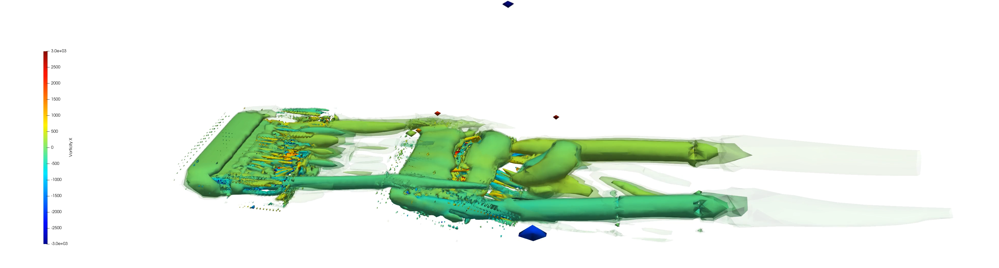
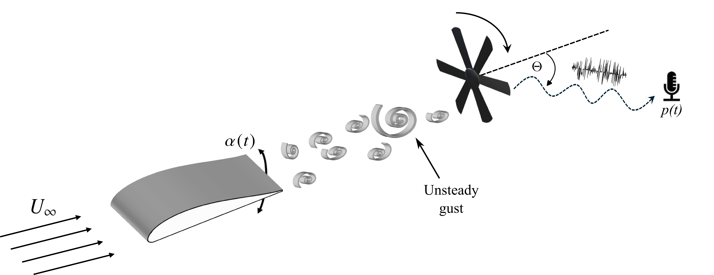
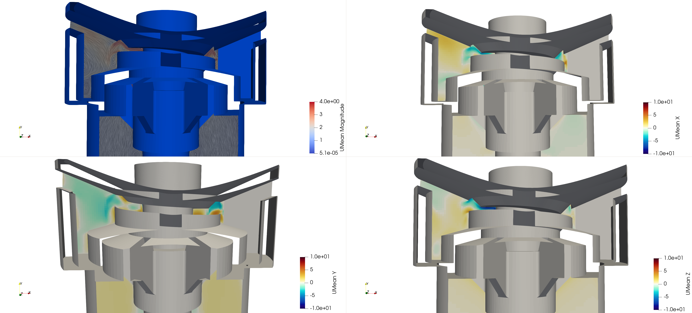
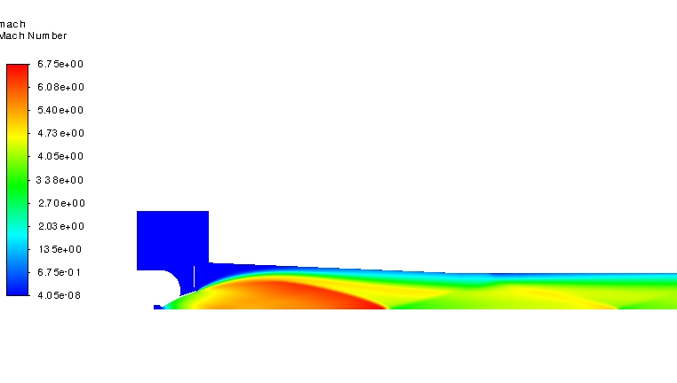
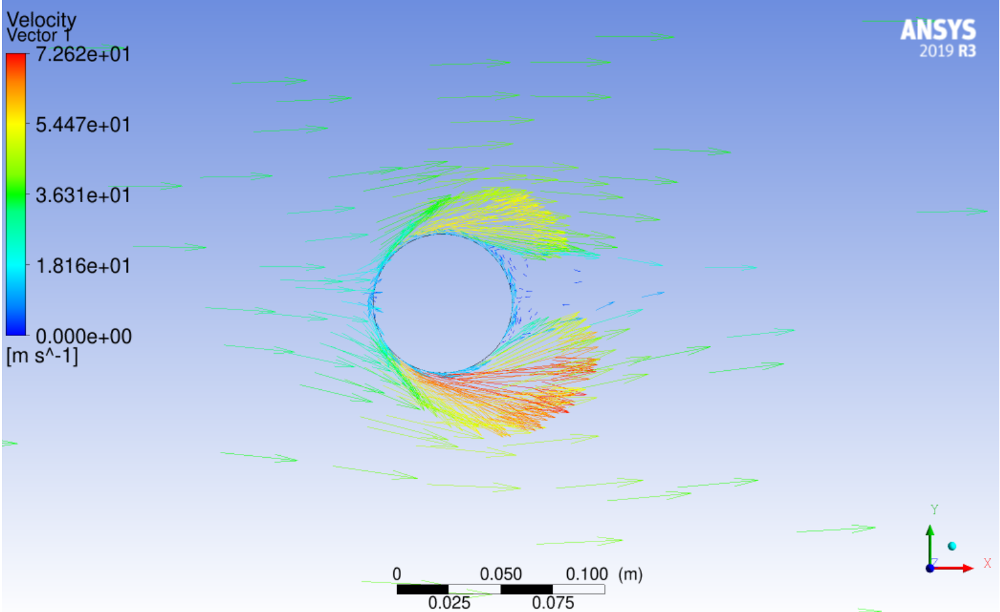
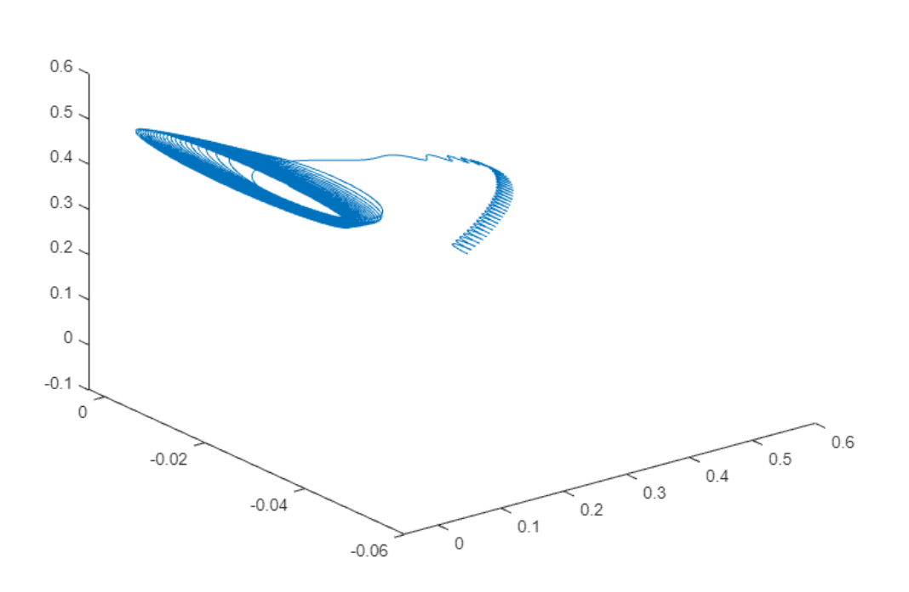
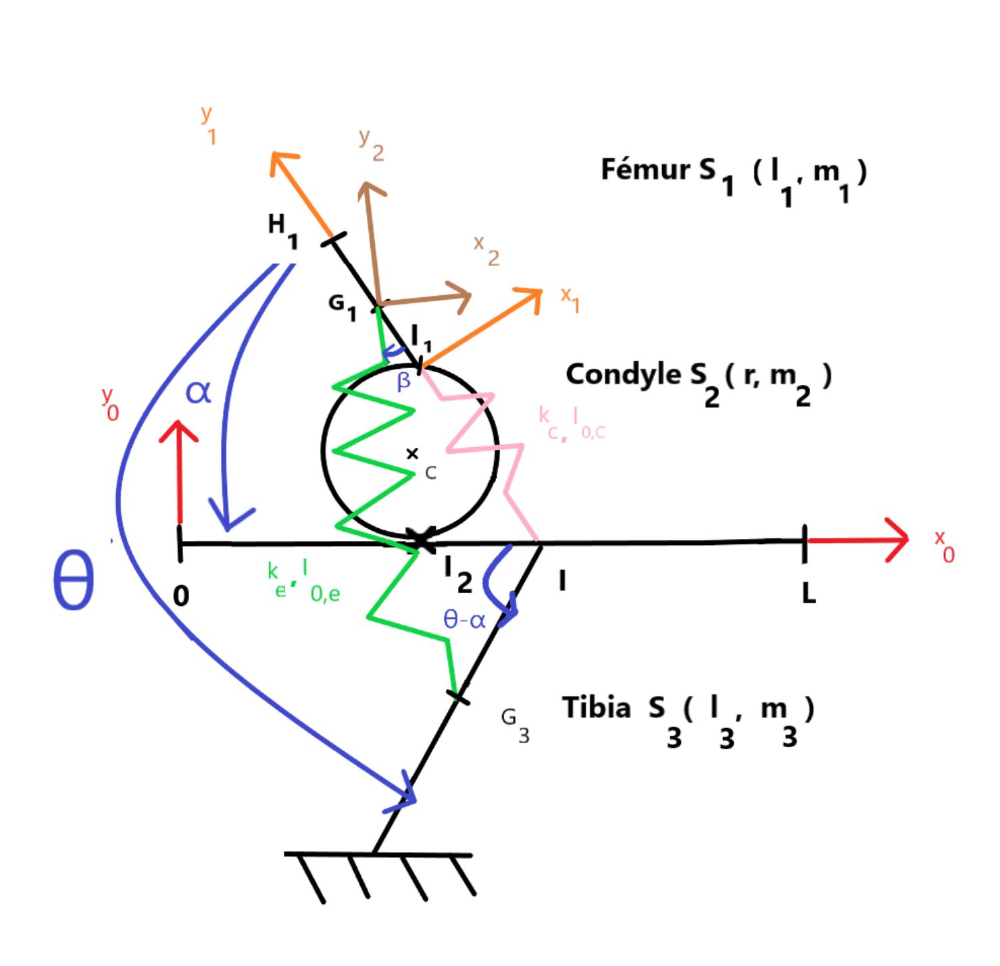

View Project →Interacting Airfoils & Stall Mitigation
Overset-mesh LES simulations of a pitching upstream airfoil interacting with a downstream airfoil.
CFD · AERODYNAMICS · AEROACOUSTICS
Computational fluid dynamics researcher working on unsteady aerodynamics, aeroacoustics, and high-performance simulations.
My research focuses on computational methods for unsteady aerodynamic flows, including interacting airfoils, stall mitigation, and an inverse aeroacoustic problem of gust-rotor interaction.

View Project →Overset-mesh LES simulations of a pitching upstream airfoil interacting with a downstream airfoil.

View Project →Inverse prediction of an unsteady disturbance-generator motion from far-field acoustic pressure.

View Project →Determine best sprinkler design for optimal flow circulation

View Project →Numerical simulations to avoid hot gas blowbacks for a thruster

View Project →Numerical simulations of a rotating ball to understand Magnus Effect
Numerical simulations of lift enhancement by the injection of a lighter gas in an aerodynamic flow control gap for a wing

View Project →Numerical problem of Attitude control of a satellite using algorithms and feedback control law
Modeling of the mechanical behavior of composites materials from 2D images

View Project →Human walking simulation through numerical modeling of the knee joint.
Martin Lafargue & Siddhartha Verma
Journal of Theoretical and Computational Aeroacoustics, 2026.
PhD Researcher · Ocean Engineering
CFD / Aerodynamics
CFD / Fluid Mechanics